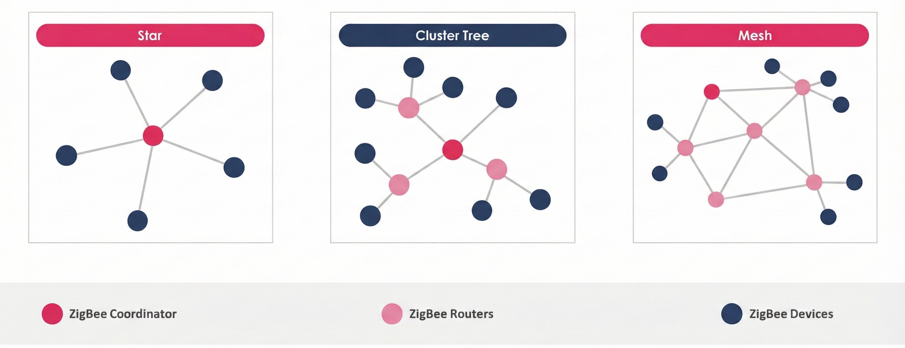

WSN Applications & WPANs
IN 3510 | Lecture 9 Comprehensive Notes
1. WSN Application Domains
Environmental
- Forest fire detection (FireBug).
- Flood detection.
- Precision Agriculture.
- Pollution monitoring (Air/Water).
- Habitat monitoring (Great Duck Island).
Military
- Battlefield surveillance.
- Targeting & Battle damage assessment.
- Nuclear/Biological/Chemical attack detection.
- Monitoring friendly forces/ammo.
Health & Home
- Telemonitoring (physiological data).
- Tracking doctors/patients/drugs.
- Home/Office automation (Smart environments).
Automotive & Commercial Applications
Automotive Applications
- Reduces wiring effects in vehicles.
- Measurements in chambers and rotating parts.
- Remote technical inspections.
- Condition monitoring (e.g., at bearings).
Other Commercial Applications
- Environmental control in office buildings (estimated energy savings: $55 billion/year).
- Interactive museums.
- Detecting and monitoring car thefts.
- Inventory management and tracking.
- Vehicle tracking and detection.
2. WPAN: Bluetooth Evolution (Bluetooth 5)
Introduction
- Bluetooth widely deployed for ~20 years.
- Bluetooth 5 released in Dec 2016.
- Focus: Improve range, speed, broadcast capacity, coexistence.
- Optimized for IoT (home, industrial, outdoor coverage).
Why it matters for IoT
- Improved range & reliability for large-area IoT.
- Larger advertisement payloads for beacons.
- Lower power consumption via improved PHY.
Bluetooth 5 — Major Improvements
2× Speed
2 Mbps PHY → faster transfers, lower airtime.
4× Range
Long-range (coded PHY) for home/industrial coverage.
+20 dBm Power
Higher TX power (region dependent).
CSA #2
Better interference handling.
8× Advertising
Multiple advertising sets with different intervals.
255-byte Payload
Larger advertisements (vs 31 bytes).
High Duty Non-Connectable
Fast & frequent beacon broadcasts.
Slot Availability Mask
Better coexistence with LTE/MWS systems.
PHY & Energy Notes
- 2 Mbps PHY reduces airtime → lower power.
- Long-range = coded PHY + higher link budget.
- TX power limited by regulations.
Advertising & Payload
- Multiple advertisement sets.
- 255-byte payload = richer metadata & URLs.
- High-duty broadcast for alerts/proximity.
Use-Cases
Home/Building IoT
Smart locks, sensors, indoor navigation.
Industrial/Outdoor
Tracking, monitoring, long-range sensing.
Beaconing
URLs, proximity data, location-aware apps.
Low-Power IoT
Reduced airtime → longer battery life.
3. WPAN: Bluetooth 6.0 & 6.1 Features
Bluetooth 6.0: Key Enhancements
Bluetooth 6.0 introduces major enhancements for secure ranging, faster discovery, efficient advertising, and improved support for time-sensitive data.
1. Bluetooth Channel Sounding
- Enables secure fine ranging between Bluetooth devices.
- Essential for applications like digital keys, asset tracking, and secure location-based access.
- Provides accuracy and security improvements over RSSI-based methods.
2. Decision-Based Advertising Filtering (DBAF)
- Improves efficiency for scanners dealing with extended advertising.
- Enables devices to filter advertisements based on predefined rules.
- Reduces power usage and avoids processing unnecessary packets.
3. Monitoring Advertisers
- Addresses issues in device discovery and connection establishment.
- Useful in dynamic environments where devices frequently move in and out of range.
- Improves overall Bluetooth LE efficiency in multi-device environments.
4. ISOAL Enhancement
- Improves handling of time-sensitive data (audio, control systems).
- New framing mode reduces latency dramatically.
- Better segmentation allows more efficient use of PDU space → fewer packets required.
5. Frame Space Update
- Earlier versions used a fixed Inter-Frame Space (IFS) of 150 μs.
- Bluetooth 6.0 introduces negotiable IFS.
- Shorter IFS → Higher throughput in fast-processing devices.
- Longer IFS → Supports slower devices for better compatibility.
- Better coexistence with other wireless technologies due to flexible timing.
Bluetooth 6.1 Enhancements
- Increased Device Privacy: Stronger protections against tracking and unauthorized identification.
- Improved Power Efficiency: Optimized scanning, advertising, and connection behavior for longer battery life.
- Link Layer (LL) Extended Features: More robust control over timing, connection parameters, and scheduling.
4. WPAN: ZigBee (IEEE 802.15.4)
What is ZigBee?
- ZigBee is a low-power wireless technology designed for control and sensor networks.
- Uses a mesh network where data can hop through intermediate devices for longer range.
- Based on the IEEE 802.15.4 standard (PHY + MAC).
- Created by the ZigBee Alliance.
- Alliance members include Philips, Motorola, Intel, HP and others.
Key Characteristics
- Very low power consumption (battery lasts months to years).
- Supports large networks (>65,000 nodes).
- Low cost & simple implementation.
- Low data rate (~250 Kbps).
- Reliable short-range communication.
- 128-bit AES security.

ZigBee Architecture
- Network & Application Support Layer (NWK + APS): Handles routing, device discovery, security, and provides services needed by applications.
- MAC (Medium Access Control) Layer: Manages channel access, beaconing, and reliable frame delivery between devices.
- PHY (Physical) Layer: Responsible for modulation, demodulation, frequency selection, and transmitting/receiving radio signals.
Applications
- Home automation (smart lighting, security, HVAC).
- Industrial control & monitoring.
- Commercial building automation.
- Government & utility monitoring systems.
5. ZigBee Device Types & Topologies
ZigBee Device Types
ZigBee Coordinator (ZC)
- Root of the ZigBee network tree.
- Responsible for network creation & management.
- Stores complete network information (routing tables, device list).
- Acts as bridge to other networks.
- Holds and distributes security keys.
- Only one coordinator per ZigBee network.
Full Function Device (FFD)
- Can act as a router or a coordinator.
- Forwards/relays data for other devices.
- Supports all ZigBee topologies (Star, Tree, Mesh).
- Requires less memory than Coordinator.
- Lower manufacturing cost than ZC.
- Used for mains-powered or always-active devices.
Reduced Function Device (RFD)
- Simple end devices (e.g., sensors, switches).
- Cannot act as router — no data relaying.
- Very low memory and computation needs.
- Cheapest ZigBee device type.
- Typically battery-powered; supports sleep mode.
- Communicates only with its parent (usually FFD or ZC).
ZigBee Network Topologies
- Star Topology: All RFDs communicate only with the Coordinator (ZC). Simple, low power, used in home automation.
- Peer-to-Peer (Tree) Topology: FFDs form a hierarchical network. Devices can communicate through parent routers. Supports routing and multi-hop communication.
- Mesh Topology: Most robust. Multiple paths exist between nodes. Self-healing — if one node fails, data adapts and finds another route.
6. ZigBee vs Bluetooth
| Feature | Bluetooth (Classic / BLE) | ZigBee |
|---|---|---|
| Power Profile | Days – Months | Years (Very low power) |
| Complexity | Higher (More protocols) | Simple (Designed for sensors) |
| Nodes per Network | 7 Active (Classic) | > 65,000 Nodes |
| Latency | ~10 seconds (pairing & discovery) | 30 ms – 1 s |
| Range | ~10 m (typical) | 70–300 m (depending on power) |
| Extendibility | No (limited network size) | Yes (Mesh routing) |
| Data Rate | 1–3 Mbps | 250 Kbps |
| Security | 64-bit / 128-bit Encryption | 128-bit AES + App Layer Security |
6. Bluetooth vs Wi-Fi vs ZigBee
| Parameter | Bluetooth® Low Energy (BLE) | Wi-Fi® | Zigbee® |
|---|---|---|---|
| Data Rate | 1 – 3 Mbps | 300 Mbps | 20kb/s, 40 kb/s, 250kb/s |
| Frequency Band | 2.4 GHz | 2.4 GHz and 5 GHz | 868/915 MHz, 2.4 GHz |
| Range | 10m | 190 m | 100m |
| Security | E0 Stream cipher | WEP, WPA authentication, 128-bit Advanced Encryption Standard (AES), VPN, Firewall | 128-bit AES |
| Risk of Data Collision | High | Medium | |
| Maximum Number of Nodes | 8 | 2,007 | >65,000 |
| Power Efficiency | Acceptable to Good | Varies | Excellent |
| Of Note | Once paired, connecting is automatic. | Connecting is automatic once it is set up. | Mesh capability creates greater signal reliability |
| Applications | To replace wiring in handheld devices. | The main connectivity resource for home, work, retail, and more. | Power-sipping applications; remote sensor and wireless controls |
| Benefits | Convenience, Cost, connect to Android, Blackberry, iOS, Tizen, and Windows. | Most widely used wireless connectivity solution. Connect to iOS and Android. | Reliable, Low Power, Cost effective, “Assemble and Forget” |
| Draw-backs: | Short range | Not always reliable. Higher power consumption | Not mainstream for connection to smartphones, etc. |
| IEEE | IEEE 802.15.1 | IEEE 802.11n | IEEE 802.15.4 |
| Markets | Mainly for portables. Widely adopted in consumer markets, retail | Ubiquitous; Widely adopted in nearly every market. Replaces cables in work areas or homes. | Better known in Industrial markets, smart homes, smart lighting. |
| Attractiveness as a hacking target: | Low to medium | High | Low |
| Find ready-to-connect modules at: | mouser.com, adafruit.com, sparkfun.com | mouser.com, adafruit.com, sparkfun.com | mouser.com, adafruit.com, sparkfun.com |
| Learn more at: | [www.bluetooth.com](https://www.bluetooth.com) | www.wi-fi.org | [www.zigbee.com](https://www.zigbee.com) |
Generated Comprehensive Guide • IN 3510 Mobile & Wireless Networks • Lecture 9